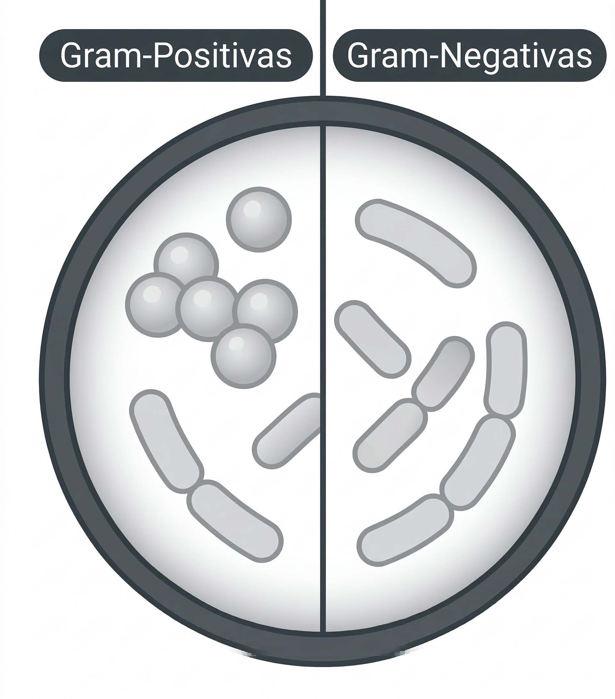

Princípio biológico da coloração de Gram
Entre os métodos de coloração utilizados na rotina laboratorial, a coloração de Gram é a técnica mais empregada. Seu princípio baseia-se na diferença estrutural da parede celular bacteriana, particularmente na espessura da camada de peptidoglicano e na presença ou ausência de membrana externa. Essas diferenças determinam a retenção ou perda do corante durante o processo de descoloração 3.
Simulação guiada
Como a coloração de Gram acontece
Percorra as etapas do método e observe como a estrutura da parede celular interfere na retenção ou perda do corante.

Base estrutural da diferenciação
A etapa crítica é a descoloração. O comportamento distinto decorre da espessura do peptidoglicano e da presença ou ausência de membrana externa.

Gram-positivas
Apresentam camada espessa de peptidoglicano e ausência de membrana externa. Essa organização favorece a retenção do complexo cristal violeta–iodo após a etapa de descoloração.